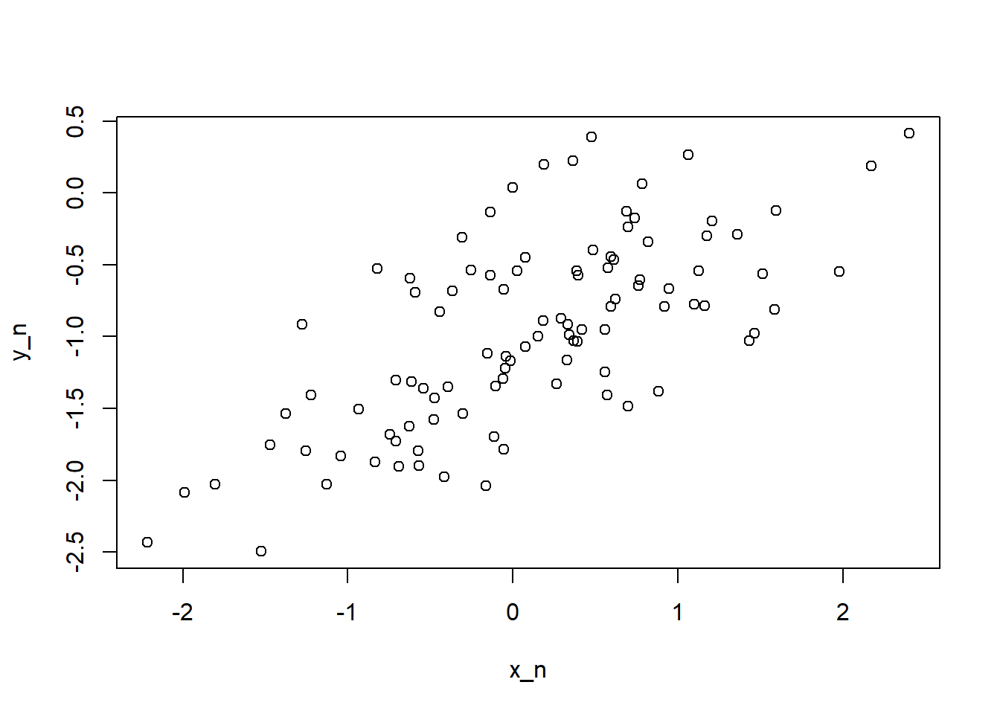
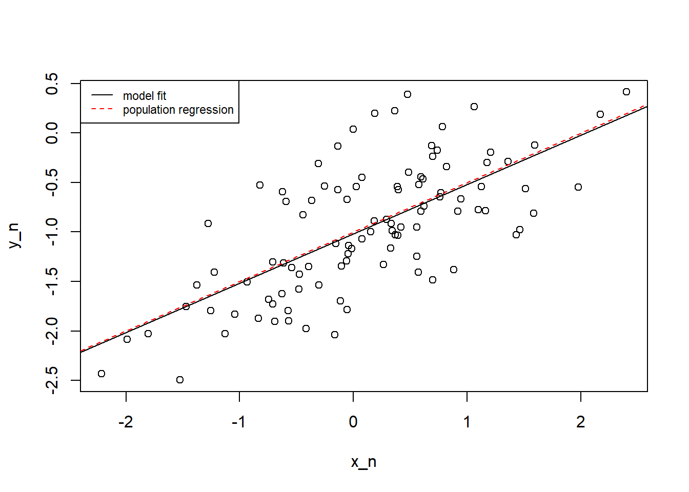
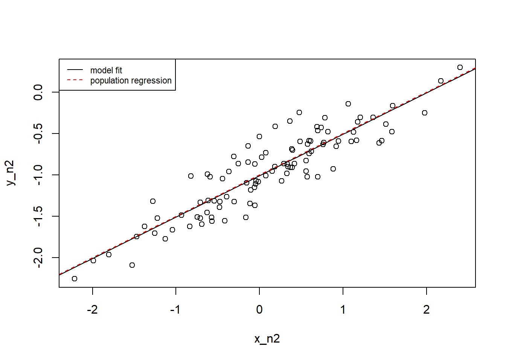

Practical 3
In this practical, you will run simulations to dive deeper into the principles behind linear models.
Part I - Simple Linear Models Without Intercept
Let’s investigate the t-statistic for the null hypothesis \(H_{0} : \beta = 0\) in simple linear regression without an intercept. The formula would therefore be \(y = \beta x\).
By excluding the intercept, the model is constrained to pass through the origin \((0,0)\), allowing the relationship between the response and predictor to be interpreted as proportional. In other words, the removal of the intercept forces the regression line to start at \((0,0)\), so when \(X = 0\), then \(y = 0\).
Let’s first generate some data for a predictor x and a response
y. We select a seed to ensure that we generate the same data every
time. To generate values, we use the rnorm function to produce 100
data values drawn from a normal distribution (hence rnorm()).
Now that we generated our predictor and our response variable, let’s run a simple linear regression of y onto x, without an intercept. One way to do so is by adding 0 into the formula.
And now, let’s have a look at the results.
## Estimate Std. Error t value Pr(>|t|)
## x 1.993876 0.1064767 18.72593 2.642197e-34We can see a significant positive relationship between y and x. The coefficient estimate for x is 1.993876, and since the relationship betweeen x and y is proportional, we interpret the estimate as the y values being predicted to be (a little below) twice the x values.
But what happens if we run a regression of x onto y?
## Estimate Std. Error t value Pr(>|t|)
## y 0.3911145 0.02088625 18.72593 2.642197e-34We again observe a significant positive relationship between x and y, except that the x values are predicted to be (a little below) half the y values (since the coefficient estimate is 0.3911145).
Note also the t-values for the two models. They are identical and of course so is the p-value (therefore, there is a significant relationships between x and y).
Therefore, the results of the models of y onto x and x onto y indicate that the coefficients would be the inverse of each other (2 and 1/2) whilst the t-statistic values (and p-values) remain the same.
Why are the t-statistic values identical?
For each coefficient, the t statistic is calculated by dividing the coefficient estimate by its standard error. For example, for the fit2 model, we have a coefficient estimate of 0.3911145 and a standard error of 0.02088625 and so dividing 0.3911145 by 0.02088625 gives us 18.72593.
You’ll also remember that the correlation coefficient between two variables is symmetric and so the correlation between X and Y is the same as for Y and X. This is the reason why it is incorrect to state that “X causes a change in Y”.
In a linear model, we are testing whether there is a linear association between X and Y but not if X causes Y or Y causes X. Therefore, irrespective of whether we are regressing Y onto X or X onto Y, the t-statistic is testing the same null hypothesis \(H_{0} : \beta = 0\) (i.e. fundamentally, it is testing whether there is a linear correlation between X and Y).
So what exactly is the role of the intercept?
As you already know, the intercept represents the value of y when x is 0 which can be thought of as the initial value effect that exists independently of x. This not only applies to the simple linear regression model but also to the multiple linear regression model (i.e. the intercept is the value of Y when all predictors are zero). In other words, the intercept adjusts the starting point of regression line and allows for the line to shift up or down on the y-axis thus reflecting a “baseline” level of y that is not dependent on x. With an intercept, the slope coefficient still tells us how much Y changes with a one-unit change in X, but this change is relative to the y value when x is zero and this is important when x can take a value of 0 that is meaningful to the model.
Without the intercept, the line is forced to pass through the origin \((0,0)\), which may not be suitable unless the data naturally begin at zero (or there are some other theoretical or practical reasons which warrant the line passing through the origin).
With an intercept, the regression line is no longer forced to pass through zero (and will only do so if the data naturally begin at zero). The intercept therefore allows for the regression line to better fit the data, particularly when the data do not actually begin at zero. In this way, the model can capture the average outcome when the predictor(s) is/are zero.
Part II - Simple Linear Models with Intercept
Do you think that the t-statistic will be the same for both regression of Y onto X and X onto Y if we were to include the intercept?
0.0.1 Task 1
Use the same data as before and run a regression with Y as response and X as predictor. Store the results into an object called fit3.
0.0.2 Task 2
Extract the model coefficients from the summary results of the model.
## Estimate Std. Error t value Pr(>|t|)
## (Intercept) -0.03769261 0.09698729 -0.3886346 6.983896e-01
## x 1.99893961 0.10772703 18.5555993 7.723851e-34How does coefficient for fit3 compare to fit? How about the t-statistic value?
The coefficient for the model with the intercept is very similar to the coefficient for the model without the intercept. The t-statistic is also very close (18.72593 for the model without intercept and 18.5555993 for the model with the intercept).
0.0.3 Task 3
Now run a regression with X as response and Y as predictor. Store the results into an object called fit4.
0.0.4 Task 4
Extract the model coefficients from the summary results of the model.
## Estimate Std. Error t value Pr(>|t|)
## (Intercept) 0.03880394 0.04266144 0.9095787 3.652764e-01
## y 0.38942451 0.02098690 18.5555993 7.723851e-34How does coefficient for fit4 compare to fit2? How about the t-statistic value? Are the t-statistic values different between the fit3 and fit4 models?
The slope coefficient for the model with the intercept (0.38942451) is very similar to the coefficient for the model without the intercept (0.3911145) and so is the t-statistic. Also, as expected, the t-statistic value is identical to that of the fit3 model. Therefore, the t-statistic for simple regression of Y onto X is identical to the t-statistic for simple regression of X onto Y.
Part III - Noise
How does variability affect the coefficients of a linear model?
Let’s generate our “true” population data.
We create a variable x with 100 observations drawn from a normal distribution. To be more specific about the characteristic of our variable x, we will not only specify the total number of observations (100), but also the mean (0), and standard deviation (1). This will be our predictor.
Now let’s create another vector called eps containing 100 observations drawn from a normal distribution with a mean of zero and a variance of 0.25. This will be the error or epsilon.
using x_n and eps_n, we now generate a vector y_n according to the following formula: \(Y = -1 + 0.5X + \epsilon\). Essentially, we specify our intercept, the slope coefficient, the predictor variable and the error to obtain our response variable.
The values -1 and 0.5 represent the “true” coefficients for the intercept \(\beta_{0}\) and slope \(\beta_{1}\) respectively.
Now we can create a scatterplot to observe the association between X and Y.

The plot indicates a linear relationship between X and Y. The relationship is clearly not perfectly linear due to noise.
If we were to estimate these population parameters, to what degree do you think the estimated coefficients will differ from these true population parameters?
Ok, so we have the variables we generated, so our predictor x_n and our response y_n and we run a regression model.
##
## Call:
## lm(formula = y_n ~ x_n)
##
## Residuals:
## Min 1Q Median 3Q Max
## -0.93842 -0.30688 -0.06975 0.26970 1.17309
##
## Coefficients:
## Estimate Std. Error t value Pr(>|t|)
## (Intercept) -1.01885 0.04849 -21.010 < 2e-16 ***
## x_n 0.49947 0.05386 9.273 4.58e-15 ***
## ---
## Signif. codes: 0 '***' 0.001 '**' 0.01 '*' 0.05 '.' 0.1 ' ' 1
##
## Residual standard error: 0.4814 on 98 degrees of freedom
## Multiple R-squared: 0.4674, Adjusted R-squared: 0.4619
## F-statistic: 85.99 on 1 and 98 DF, p-value: 4.583e-15The results of the model show an estimated slope coefficient (\(\hat{\beta_{1}}\)) for x_n of 0.49947. This is very close to the population value (\(\beta_{1}\)) which is 0.5! We see a similar estimated value for the intercept (\(\hat{\beta_{0}}\)) which is -1.01885, again very close to the true value for the intercept (\(\beta_{0}\)) which is -1!
Therefore, if we were to plot the true regression line and the estimated regression line, we would see that the two are difficult to distinguish (given the similarity of the estimated and true values for the coefficients).
Code

What if we were to fit a polynomial regression model? Would there be any
evidence that adding a quadratic term improves the model fit? To add a
polynomial term of degree two, we can use the poly base R function
directly in the code for the model.
## Analysis of Variance Table
##
## Model 1: y_n ~ poly(x_n, 2)
## Model 2: y_n ~ x_n
## Res.Df RSS Df Sum of Sq F Pr(>F)
## 1 97 22.257
## 2 98 22.709 -1 -0.45163 1.9682 0.1638Since the F-test is not statistically significant, there is no evidence that adding a quadratic term improves the model fit.
Ok, so what do you think would happen if we were to reduce the noise in the data?
Let’s generate new data but reduce the variance from 0.25 to 0.05. We keep the predictor X the same.
But we reduce the error (so we reduce eps from 0.25 to 0.05).
using x_n2 and eps_n2, we again now generate a vector y_n2 according to the same formula as before: \(Y = -1 + 0.5X + \epsilon\).
We now build a new model called fit7 using the new data.
##
## Call:
## lm(formula = y_n2 ~ x_n2)
##
## Residuals:
## Min 1Q Median 3Q Max
## -0.41967 -0.13724 -0.03119 0.12061 0.52462
##
## Coefficients:
## Estimate Std. Error t value Pr(>|t|)
## (Intercept) -1.00843 0.02169 -46.50 <2e-16 ***
## x_n2 0.49976 0.02409 20.75 <2e-16 ***
## ---
## Signif. codes: 0 '***' 0.001 '**' 0.01 '*' 0.05 '.' 0.1 ' ' 1
##
## Residual standard error: 0.2153 on 98 degrees of freedom
## Multiple R-squared: 0.8145, Adjusted R-squared: 0.8127
## F-statistic: 430.4 on 1 and 98 DF, p-value: < 2.2e-16If we compare the results of fit7 with fit5, we can observe that the \(R^{2}\) value for fit7 is 0.8145, much higher than the \(R^{2}\) value for fit5 which is 0.4674. By plotting the data we can clearly see the reduced variability.
Code

Ok, so what if we were to increase the noise in the data?